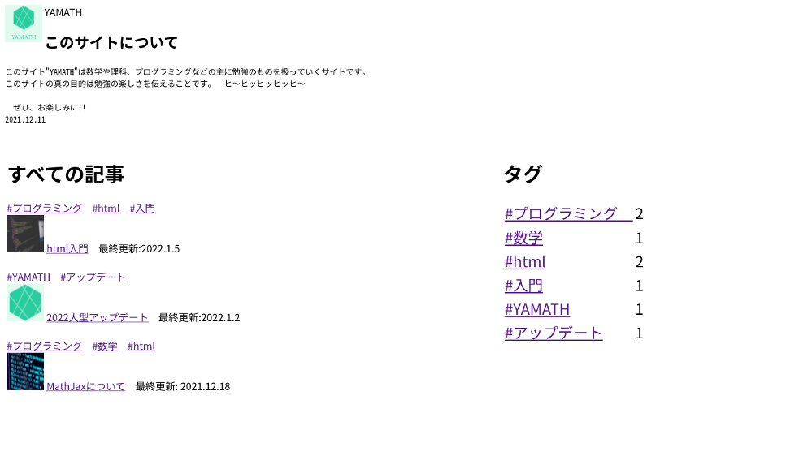

準備
cssとは？
html入門というページで、
サイトを構成しているのは、html だ。
というようなことを言ったと思いますが、
html だけでは、とても質素なものしかできないです。
そこで登場するのが、飾り付けをしてくれる、 cssです。
この YAMATH でも、css を使っていて、cssを使わないと、下のように、質素になってしまいます。

それでは早速、css の使い方を見ていきましょう。
環境構築
では、まずhtmlファイルを準備しましょう。
準備の仕方は、コチラ↓
そしたら、次は、headの中に <link rel="stylesheet" href="~~.css"> を入れます。
このプログラムを入れることで、cssファイルを読み込むことができます。
今回は、index.html というhtmlファイルに index.css というcssファイルを読み込みます。
そうして、index.htmlの中を下のようにします。
index.html
<!DOCTYPE html>
<html>
<head>
<meta charest="UTF-8">
<link rel="stylesheet" href="index.css">
<title>css入門</title>
</head>
<body>
</body>
</html>
これで、index.html に、index.css を読み込むことが、できました。
それでは次項で、css を使ってみましょう！
cssの使い方
spanタグとdivタグ
まず、css を使うときには、どこにどの飾り付けを適用させるかを明記しないといけません。
そこで使うのが、spanタグ と divタグ です。
この2つのタグは、単独では意味を持たないのですが、囲った部分をグループ化することができます。
そして、そのグループ名をつけるために、class属性 を使います。
例えば、
<span class="~~">~~</span> や <div class="~~">~~</div>
のように使います。
実は、class属性は span,divタグ 以外のタグにも使えます。
なので、<h1 class="~~">~~</h1>のようにも使えます。
ではここで、練習として、"css" というグループ名をつけて、飾り付けをしてみましょう。
index.html
<!DOCTYPE html>
<html>
<head>
<meta charest="UTF-8">
<link rel="stylesheet" href="index.css">
<title>css入門</title>
</head>
<body>
<span class="css">
<p>css体験</p>
</span>
</body>
</html>
css入門
まだ、飾り付けはされていません。
それは、cssというグループにどんな飾り付けをするかをまだ指定してないからです。
それでは、次の項で、実際に少し飾り付けをしてみましょう。
文字色の変更
それでは、index.css の方に移って飾り付けを指定しましょう。
今回は、文字色を赤色に変更させたいと思います。
index.css
.css{
color: red;
}
↓
css入門
colorという属性で、文字色を指定できます。
.(ドット)を後ろにつけて、グループ名をつけ、{}(中括弧)で、飾り付けのコードを囲むことで、飾り付けをすることができます。
そのとき、プロパティ: 値;のように、
プロパティ(先程だと "color" )を書いたあと、":" をつけ、
値(先程だと "red" )を書いたあと、";" をつけます。
結局、こんな感じになります。
.セレクタ(グループ名のこと){
プロパティ: 値; ....
}
※上の改行や空白は見やすさのためなので、.セレクタ{プロパティ:値; ....}でも大丈夫です。また、一つの中括弧の中に、複数のプロパティを指定しても大丈夫です。
タグの装飾
「このタグのときはずっとこの装飾をしたい！」
という要望に応える書き方を紹介します。
例えば、「リンク(aタグ)は全部赤色にしたい！」というようなときに使える手法です。
それは、、、セレクタの前に .(ドット) をつけないことです。
例として、先程の aタグ はすべて赤色にする、は下のようにすればできます。
a{
color: red;
}
このとき、aタグのところに class="a" と書かなくて大丈夫です。
色々なプロパティ
color
先程使った colorプロパティ をもう少し詳しくやります。
値ですが、 red,green,yellow,white,black,,, などと単語で指定することもできるのですが、
それとはまた違う色を出す方法について、みていきます。
そもそもこの画面上に出ている色は、赤、緑、青の光の三原色をうまく調整して色を出しています。
そこで、例えば白だったら、赤、緑、青(この三色を略して、RGB)を全部全開とやったり、
赤だったら、赤全開で、その他は出さないというようにやっています。
そして、それをどのように調節したのか、というのを表す物があり、それは、カラーコードと言います。
そのカラーコードを使って、下のように色を指定することができます。
.セレクタ{
color: #カラーコード;
}
そうすれば、自分の好きな色が、自由に出せますね。
しかし、その色のカラーコードが分からなければ、元も子もありません。
そのカラーコードがたくさんのっているありがたいサイトがあります。
それが、コチラです →原色大辞典
ありがたいですね。
background-color
前項と関係があるプロパティです。
こいつは、背景色を指定してくれます。
そして、その色は前回同様、redなどの単語か、カラーコードで指定します。
backgroud-color: 色;
ちなみに、このサイトの見出し小見出しに出ている色付きの四角もこの background-color をつかっています。
コードは下のような感じです。
html
<span class="heading-box"> </span>
css
.heading-box{
font-size: 40px;
background-color: #ffe4b3;
}
font-size というプロパティは次項で説明します。
また、  というのは、半角スペースを表します。
結局、あの四角は、空白に背景色をつけた、という感じです。
それで、四角みたいにしてます。実際四角ですね。
font-size
これは前項で少し触れましたが、文字の大きさを指定するプロパティです。
数値の単位は一般的に px(ピクセル) です。
px というのは、デジタル画像を構成する最小単位です。
デジタル画像というのは、小さな四角い点が集まってできていて、この点それぞれが色のついた光を放つことで、画像、動画などを表しています。
これらの一点の大きさを px としています。
使用例
font-size: 24px;
text-decoration
次は、文字の装飾です。
このプロパティでできることは
- 下線を引く
- 上線を引く
- 取り消し線を引く
- テキストを点滅させる
※現在、主要なPC用ブラウザでは効果がありません
の4つです。
プログラムは下のようです。
/*下線*/
.underline{
text-decoration: underline;
}
/*上線*/
.overline{
text-decoration: overline;
}
/*取り消し線*/
.line-through{
text-decoration: line-through;
}
/*点滅(非推奨)*/
.blink{
text-decoration: blink;
}
そして、下のように装飾されます。
text-decoration
a
最後に
cssには他にもたくさんのプロパティがあるので、調べてみてくださいね。
今回はここらへんで閉じます。
さようなら